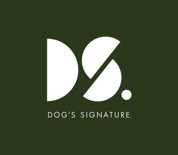

Trade Mark Journal No.2025/044 31 October 2025
WO0000001881294 (9,14,16,18,20,25,28,35,41)
Office of origin: European Union Intellectual Property Office (EUIPO)
Date of International Registration:19 August 2025
Date of designation in the UK:
19 August 2025

The mark contains the colours green and white.
International priority date claimed: 2 April 2025
(European Union Intellectual Property Office (EUIPO))
(019166739)
- Class 9
- Audio books; mobile apps; application software; noise cancelling headphones; noise cancelling apparatus; lifesaving vests for use by dogs.
- Class 14
- Jewellery for pets; key rings; charms for key rings; key rings and key chains, and charms therefor; necklaces [jewellery]; jewellery made from recycled silver; jewellery made from recycled gold.
- Class 16
- Stickers [stationery].
- Class 18
- Dog leashes; dog collars; dog clothing; dog clothing [bandanas for dogs]; dog clothing [scarves for dogs]; covers for animals; textile shopping bags; animal carriers [bags].
- Class 20
- Dog beds; dog baskets; portable kennels; cushions for lining pet crates; cushions; soft furnishings [cushions]; pet cushions; beds for household pets.
- Class 25
- Bandanas [neckerchiefs]; neck scarves [mufflers]; shawls; bandanas; tee-shirts; sweat shirts; hooded sweatshirts; caps.
- Class 28
- Toys for pets; toys for pets; toys for dogs.
- Class 35
- Affiliate marketing; affiliate marketing, in relation to the following goods: dog accessories; retail services and retailing, in relation to the following goods: dog accessories; retail services in relation to the following goods: dog accessories; affiliate marketing, in relation to the following goods: dog accessories and matching accessories for dog owners; affiliate marketing, in relation to the following goods: dog costumes and matching clothing for dog owners; retail services in relation to the following goods: dog accessories and matching accessories for dog owners; retail services in relation to the following goods: dog costumes and matching clothing for dog owners; affiliate marketing, in relation to the following goods: perfumed soaps, solid perfumes; affiliate marketing, in relation to the following goods: perfumed soaps; affiliate marketing, in relation to the following goods: cosmetics for animals; affiliate marketing, in relation to the following goods: deodorants for pets; affiliate marketing, in relation to the following goods: odour fresheners for animals; affiliate marketing, in relation to the following goods: bath preparations for animals; affiliate marketing, in relation to the following goods: soaps for pets; affiliate marketing, in relation to the following goods: perfumery; affiliate marketing, in relation to the following goods: perfumery and fragrances; retail services in relation to the following goods: perfumed soaps, solid perfumes; retail services in relation to the following goods: perfumed soaps; retail services in relation to the following goods: cosmetics for animals; retail services in relation to the following goods: deodorants for pets; retail services in relation to the following goods: odour fresheners for animals; retail services in relation to the following goods: bath preparations for animals; retail services in relation to the following goods: soaps for pets; resale services for perfumery; retail services in relation to the following goods: perfumery and fragrances; affiliate marketing, in relation to the following goods: books and newspapers about dogs and pets; retail services in relation to the following goods: books and newspapers about dogs and pets.
- Class 41
- Teaching of pet care; training in dog handling.
Hakone AB
Representative: ADVOKATBYRÅN GULLIKSSON AB, Carlsgatan 3, SE-211 20 Malmö, SWEDEN